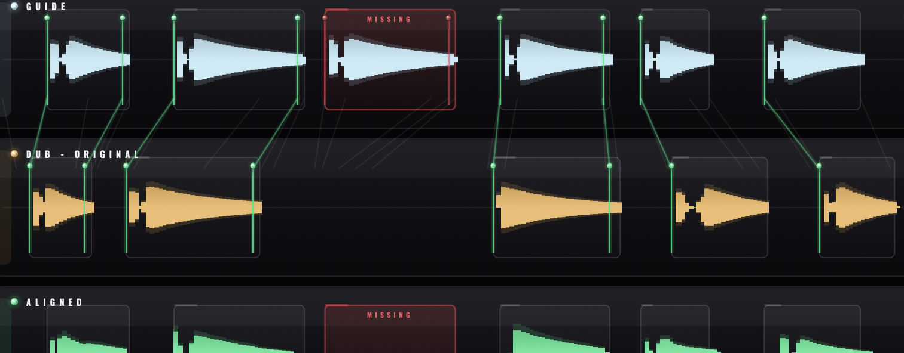

macOS
MACOS 11+ · INTEL & APPLE SILICON
Download installerOne installer · App + AU + VST3
REMI DSP · VOCAL DOUBLE ALIGNMENT
Load a guide and its double, hit Align, and every dub snaps to the lead's timing. Doppel splits both takes into phrases, flags a line the dub skipped instead of smearing its neighbour across the gap, and grades every transient for how tightly it landed.
EARLY ACCESS · NO ACCOUNT REQUIRED

REMI DSP · DOPPEL CORE — 44.1–96 kHz
Doppel doesn't just slide a clip until the peaks line up. It builds a warp between the two performances and re-times the dub through it — the timing changes hide in the gaps, so words keep their natural rate while the spaces between them absorb the drift. A double that was never going to sit ends up glued to the lead.

THE VERDICTS
Every guide onset draws a tether to the dub transient it locked onto — green when it nailed it, gold when it drifted, red when the line was never there. A phrase the dub skipped is sectioned off and flagged missing, then rendered silent — never a smear of the phrase next to it.
Timing changes hide in the gaps between words, so voiced material plays at its natural rate while the spaces absorb the drift.
Per-onset needles and cross-lane tethers, colour-graded by residual error — the whole alignment readable at a glance.
Backing vocals that skip a line are sectioned and flagged missing, then rendered silent — the neighbour is never smeared across the gap.
Optional and off by default. Unison or harmony-aware — a third stays a third — with true formant handling anchored to the dub's register.
Drop a sync point to pin an anchor, or mark a region to pass through untouched when the material gets ambiguous.
One binary for every host: ARA hosts read the track audio directly, everyone else captures from the session. VST3, AU & Standalone.
Press ? for a built-in guide that spells out both workflows — armed capture in a DAW (ARA), or Load / Align / Export in the standalone — plus every control. Rich tooltips and empty-lane prompts mean nothing to look up.
Install, load your lead and its double, and hit Align. No account required — the full version, every format.
MACOS 11+ · INTEL & APPLE SILICON
Download installerOne installer · App + AU + VST3
EARLY ACCESS · NO ACCOUNT